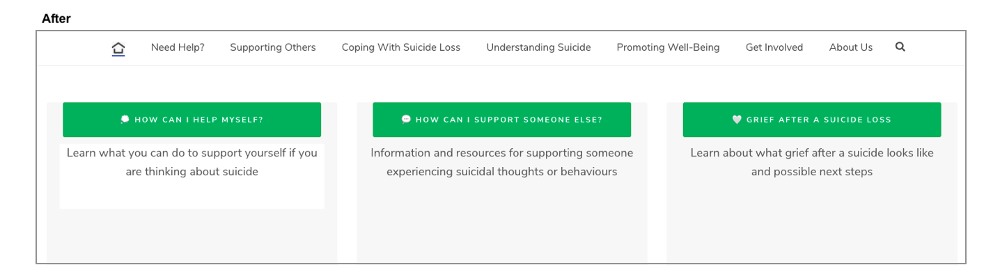
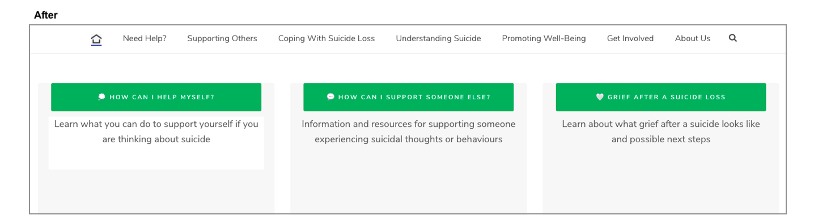

Waterloo Region Suicide Prevention Council
Student Placement
.png)
About the Partnership
I had first heard about Waterloo Region Suicide Prevention Center from my web design professor who connected fellow students and I to WRSPC's program coordinator. We were tasked with creating blog posts which WRSPC would then post onto their website blog. Near the end of this course, I contacted the program coordinator to inquire about volunteering in order to gain more experience in the field of design. She agreed and we began working together on graphics and other website content. During this time, Wilfrid Laurier University informed UX students about a funding opportunity for those currently volunteering for a non-profit organization. I inquired and was gladly accepted. My position then switched from student volunteer to placement student at WRSPC, and my UX work experience began here!
Goal
WRSPC's goal: To reduce suicide and its impact through education, training, and community engagement initiatives utilizing suicide prevention and positive life promotion messaging.My Goal: To support WRSPC's suicide prevention and life promotion messaging by re-designing the website so that this primary information is easy to find and read, focusing on:
Overall ease of navigation on the website needed to be user-friendly as the visitors were proven to be individuals under stress who are looking for quick and easily accessibly information. Therefore, primary and urgent information needed to be easy to spot, while secondary and other information did not need to be of primary focus. Website design and aesthetics were also important because the website needed to look appealing to not only attract visitors, but keep them exploring the website to find more important information about suicide.
Software
Wordpress.
Adobe Illustrator. 
Initial Research
Initial research was done before user testing to get a look at where the problems within the website were. This allowed us to see where our focus should be on what website elements to shape user interviews and surveys around.
In order to gain a deeper understanding of the website interface, I conducted a Heuristic Evaluation.
In order to gain a deeper understanding of the users that visit the website, I did the following:
- I visited the website's Google Analytics to review user demographics, allowing me to see the kind of users that visit the website
- I created personas to have a relistic representation of key users
- I created an empathy map to answer the question: What does the user need?
- I created a journey map to help uncover the user's experience while visiting the website
User Testing
The program coordinator and I created a user research plan outlining our user research methods and expected timeline for user testing and website re-design.
We agreed to proceed with Unmoderated Remote Usability Testing (URUT) and Contextual Inquiry, and only make use of Card Sorting if needed, such as if we did not obtain enough data from the first two methods.
These methods were used to uncover user mental models while navigating through the WRSPC website. The purpose was to essentially allow the users to uncover the main issues within the website since it is them who are using the website.
Unmoderated Remote Usability Testing (URUT)
What is URUT?URUT involves participants who work through a task in their own environment without a moderator present. These tasks are provided to the user via an online platform, which in this case is a survey created with SurkeyMonkey. The participants consisted of the general public within the Kitchener-Waterloo region who were informed of the survey via WRSPC's social media accounts, including Instagram, Facebook, and LinkedIn.
The participants were provided with tasks to complete on WRSPC's website on their own time and explain how hard that task was to complete. These tasks were formed around what WRSPC considered to be the most vital information on their website. For example: Please take the time to find our "Why...? Support Group" page. After this, a scale of easy to difficult was provided along with an optional text box where participants could describe why their experience was easy or difficult.
Below is the initial URUT recruitment poster I created and sent to the program coordinator to distribute.
Click here to view the interactive pdf version of the poster which allow users to easily access the survey by clicking the link.
After about two weeks, we were not getting the completion rate expected, so we created a youth survey for high school students, along with a separate adult one. This youth survey was posted on WRSPC's Instagram account with the incentive of one volunteer hour for high school students who fully complete it. We now had enough responses to move on to the Contextual Inquiry phase, where we would form our task questions based on the results of URUT. For example, if a task was easy to complete by everyone who took the survey, we identified it as a non-issue and did not include it into our Contextual Inquiry sessions.
Below are both the adult and youth URUT recruitment posters posted on WRSPC's social media accounts, fit to configure to Instagram's square photo dimensions.


Contextual Inquiry
What is contextual inquiry?This method involves observing people in their natural context and asking them questions to fill in the gaps of the observation. It provides information about the context of use, which is website usability and navigation in our case. The purpose was to observe how users navigate through the WRSPC website and what process they go through when identifying certain information on the website. Due to the pandemic, we were not able to interview participants in-person, so we conducted them via Microsoft Teams.
Some tasks included:
- Please try and find our general resource page. Do not use the search engine. While you are doing this, narrate the process as well as any issues you may be facing.
- Can you please go to the home page without clicking your browser’s back button? Try and find the “home” button if there is one.
- Now that you are on the home page, imagine you are a parent, and your child is struggling with mental health. Where could you find information and resources that could help you support you child?
Issues
Main Issues Identified by URUT
- There is no clear home button.
Main Issues Identified by Contextual Inquiry
- There is no clear home button
- One of the main pieces of information WRSPC wanted users to find is their Why...? Support Group; this page was not easily found
- Youth and Adult Resources pages were difficult to find
- There is an overwhelming amount of information on the website at first glance
A list of design tasks was then compiled and I began designing.
Solutions
- Add home button.
- Make Why...? Support Group page more visible to users
- Links to Youth and Adult Resources pages were added on other appropriate pages
- Lighten the amount of information on the home page, delete any repetition on the website, and focus on making only the most important information obvious
Redesign: Before and After
1. Home page
Added and changed features:
- Added home page icon button
- Re-designed the COVID-19 banner
- Darker text for better accessibility and visibility
- Darker buttons for better text visibility
- WRSPC motto made more visible as this is one of the central aspects of the page
- Unappealing post thumbnails removed and live Instagram feed added


 


2. Why...? Support Group page
Each image displays the before, hover over (desktop) or click (mobile) each image to see the after!
3.
Each image displays the before, hover over (desktop) or click (mobile) each image to see the after!